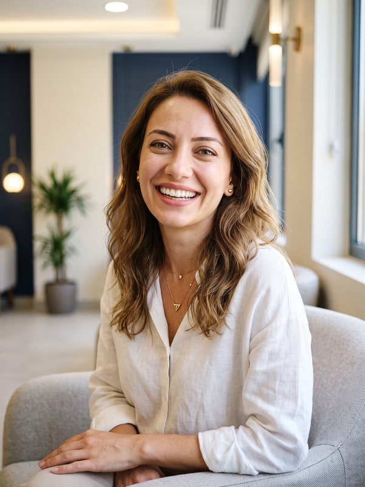
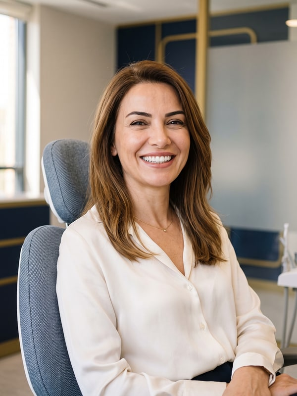
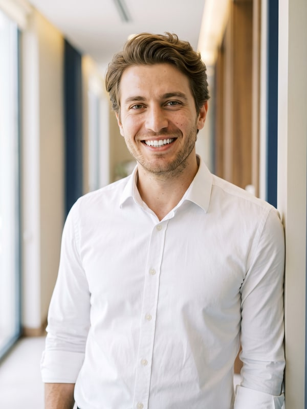

Every smile is an important part of your overall facial expression. The stories
below show how a transformation is planned at our clinic, and how we aim for a natural result,
across four different treatments.
Notice: The stories, names and images on this page are representative;
they do not describe or identify any specific patient, and are not a patient testimonial or an
account of a patient's own experience. The process and outcome of every treatment vary from person
to person; the decision is made following an examination by a dentist.
Veneers · Smile Design

Representative image
Elif's Transformation Story
TR: Elif Hanım'ın Değişim Hikayesi
Elif came to our clinic not with a specific complaint, but to find out whether a more balanced,
natural look was possible for her smile. The assessment looked at tooth shape, colour and the
smile line together. We prepared a personal plan that preserved Elif's own natural look, without
changing her facial expression.
How It Started?
Elif wasn't experiencing any significant dental health problem. However, she felt that colour
differences and small irregularities in the shape of her front teeth, in particular, were
affecting the overall look of her smile. What she wanted wasn't a dramatic change, but a more
balanced, natural smile.
Right Plan, Natural Result
During the assessment, we looked not only at the teeth themselves, but at Elif's facial features,
lip movement and natural smile line together. We observed that the colour differences and small
shape mismatches in the front teeth were affecting the smile as a whole.
Our goal in putting the treatment plan together wasn't to create an eye-catching change. We
focused on designing a natural, balanced smile that preserved Elif's own distinctive expression.
Tooth shape, length and shade were planned around this approach, and preserving natural tooth
structure was one of the core priorities throughout.
Aesthetic ceramic restorations were used to address the colour and shape differences in Elif's
front teeth. Shape and shade were chosen in natural tones so the teeth would sit in harmony with
her face. Throughout treatment, care was taken to preserve Elif's existing smile character and to
make changes only where they were actually needed.
The Result
By the end of treatment, Elif's smile had a more balanced harmony of colour and shape. But what
mattered most to Elif was that the result looked natural and preserved her own facial expression.
Her new smile felt less like a dramatic change and more like a natural part of her face.
ImplantRepresentative image
Murat's Transformation Story
TR: Murat Bey'in Değişim Hikayesi
Murat came to our clinic because of the gap left by a molar he'd lost years earlier. His priority
wasn't aesthetics — it was being able to chew comfortably again. The assessment looked not just at
the missing tooth, but at chewing balance, the condition of the neighbouring teeth and the bone
structure together.
How It Started?
Murat had been chewing on one side only for a long time. He'd noticed that this habit was
gradually causing fatigue and sensitivity in his other teeth. What he wanted was a permanent
solution he could use without thinking about it day-to-day — one that couldn't be told apart from
his natural teeth.
Right Plan, Natural Result
Bone volume and the surrounding structures were assessed on 3D tomography scans, and the implant
position was planned to the millimetre. Our goal wasn't just to fill the gap — it was to create a
result that distributed chewing forces evenly and sat in harmony with the gum.
The healing period was monitored with regular check-ups; the shade and shape of the permanent
crown were chosen to match Murat's existing teeth as closely as possible.
The implant was placed in a single session under local anaesthetic; the permanent crown was
fitted after the bone had fused with the implant. Throughout the process, we also reviewed Murat's
oral hygiene habits together and put together a personal care plan.
The Result
By the end of treatment, Murat had regained balanced, two-sided chewing. What mattered most to
him was that the implant wasn't noticeable in everyday life: "Being able to eat without thinking
about which tooth is the implant" — that was the most natural outcome of the whole process.
Zirconia

Representative image
Zeynep's Transformation Story
TR: Zeynep Hanım'ın Değişim Hikayesi
Zeynep came to our clinic because of old crowns, fitted years earlier, whose colour had changed
over time. She felt her smile looked tired — but she was also particularly keen to avoid an
overly white, uniform look that gives the impression of "obviously done" teeth.
How It Started?
There were colour mismatches at the margins of the old crowns, and shadowing along the gumline.
What Zeynep wanted wasn't a new smile; it was a brighter, more harmonious version of her own
smile. That expectation set the framework for the whole plan.
Right Plan, Natural Result
Shade selection wasn't a one-off decision; it was assessed in daylight, from different angles,
and alongside the neighbouring teeth. We chose a zirconia framework with light translucency close
to natural enamel, and gum health was also built into the plan, to clear the shadowing along the
gumline.
During the trial fitting, we listened to Zeynep's feedback point by point; small shape
adjustments were completed before final placement.
The old crowns were removed and gum health was supported first; the new crowns were fitted
permanently after a trial period with temporary teeth. Zeynep's facial features and skin tone
were the deciding factors in the shape and shade choices.
The Result
By the end of treatment, Zeynep's smile had a brighter, more cohesive look. In her own words, the
most valuable outcome was that nobody asked, "Have you had your teeth done?" — everyone just said,
"You look really good today."
Teeth Whitening

Representative image
Emre's Transformation Story
TR: Emre Bey'in Değişim Hikayesi
Emre came to our clinic because of the staining left on his teeth by the coffee he was drinking
more of during a busy period at work. His teeth were healthy; what he wanted wasn't an extensive
change, but for his smile to regain its old brightness.
How It Started?
The examination found surface staining and a light build-up of tartar on the tooth surfaces.
Because Emre's schedule was demanding, it also mattered to him that the process was quick and
comfortable. Expectations were set on a realistic footing: the goal was to lighten the tooth's
own natural shade.
Right Plan, Natural Result
Before whitening, the tooth surface was prepared with a scale and polish, so the gel could make
even contact with the tooth. In-practice whitening was carried out in a single, controlled
session, with the gums protected throughout. Aftercare advice was planned individually so as not
to trigger sensitivity.
After treatment, Emre was advised to avoid strongly coloured food and drink for the first 48
hours; we also reviewed his daily care habits together to help the result last.
The Result
After the single session, Emre's teeth reached a brighter version of their own natural shade. For
him, the best part of the result was that a process which started on his lunch break was finished
the same day, and that his smile gained an understated, natural freshness.
Notice: The stories, names and images on this page are representative; they do not
describe or identify any specific patient, and are not a patient testimonial/account of experience.
Treatment processes and outcomes vary from person to person; the diagnosis and treatment decision are
made following an examination by a dentist. Last updated: 30 August 2026 · Content approved by: Dr
Yasin [Surname].
📋 Transfer to WordPress
Each story can be published as its own page (e.g. /smile-transformations/elif/)
or all together on a single Smile Transformation Stories page. The representative-content
notice is ready in every block — do not delete it (required for regulatory compliance).
Photos are in the img/ folder (600×800 JPG); download them from the links below and upload
them to the WP media library, keeping the "Representative image" caption under each photo.

{kind=link}
{kind=link}
{kind=link}
{kind=link}
{kind=link}
{kind=link}
{kind=link}